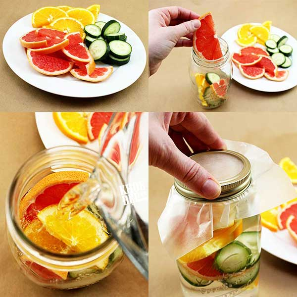

Cách làm detox giảm cân, thanh lọc cơ thể và làm đẹp da

Cách làm detox đánh bay mỡ bụng
Chuẩn bị
1-2lit nước lọc
1 trái dưa leo
1 trái chanh
1 trái cam
10-15 lá bạc hà
Đá viên
Hướng dẫn
Rửa sạch các nguyên liệu trên. Thái mỏng chanh, cam và dưa leo. Ngâm trong 1-2lit nước, sau đó cho thêm các lá bạc hà. Ngâm trong 1-2 tiếng rồi uống hay có thể để qua đêm trong tủ lạnh (ngăn mát).
Sau khi uống hết nước đầu, bạn có thể cho tiếp nước 2-3 rồi chờ thêm 1 tiếng mới uống.
Công thức pha detox thanh lọc cơ thể
Chuẩn bị
1 lọ hay bình lớn
500ml nước lọc
1 trái táo xanh
3 thanh quế (mua ở tiệm thuốc nam)
Hướng dẫn
Rửa sạch táo, cắt thành từng miếng nhỏ, cho vào lọ. Cho tiếp quế vào, đổ nước và đóng nắp kín. Ngâm trong 1-2 tiếng là bạn có thể uống được hay có thể để trong tủ lạnh qua đêm.
Sau khi uống hết lớp nước đầu, bạn có thể cho thêm lớp nước 2-3 và chờ thêm 1 tiếng nước mới được uống.
Công thức detox làm đẹp da
Chuẩn bị
Lọ hay bình lớn
500ml nước lọc
Vài trái dâu tằm hay dâu tay
1 trái chanh
1 nắm nhỏ lá bạc hà
Hướng dẫn
Rửa sạch chanh và dâu, thái chanh thành từng lát mỏng, cắt đôi dâu để cho dễ ra nước. Cho vào lọ và cho tiếp nước vào, đóng kín nắp. Ngâm 1-2 tiếng rồi uống hay có thể để qua đêm trong ngăn mát tủ lạnh.
Sau khi uống xong nước đầu, có thể cho nước 2-3, ngâm trong 1 tiếng rồi uống.
Những lưu ý khi làm nước detox
Nếu ngâm trái cây cả vỏ thì nên ngâm trong nước muối pha loãng trong 15 phút rồi mắt cắt lát cho vào lọ.
Tinh dầu vỏ cam, chanh nếu ngâm cả ngày sẽ gây vị đắng; nếu không uống được thì trước khi làm bạn nên bỏ vỏ đi. Nhưng có tinh dầu ra thì sẽ thơm hơn, nên có thể cho vài lát còn vỏ.
Nước detox tùy vào sở thích mà chọn nên sẽ có mùi vị khác nhau nhưng nhìn chung là có vị chua do toàn chọn trái cây giàu vitamin C. Nếu không chịu được vị chua nên cho thêm các loại trái cây ngọt như táo, dứa, nho, lựu hay dưa hấu.
Sau khi uống xong nước detox 2-3 lần thì làm mới nhé vì cũng hết chất rồi.
Tốt nhất không nên để quá 24 tiếng.
Nên uống sau khi ăn sáng.
Vì detox không phải là thuốc uống giảm cân nên bạn phải phụ thuộc hoàn toàn vào chế độ ăn kiêng giảm cân của mình. Hãy nhớ muốn giảm cân chỉ cần lượng tinh bột nạp vào ít hơn lượng tinh bột đốt đi là được.